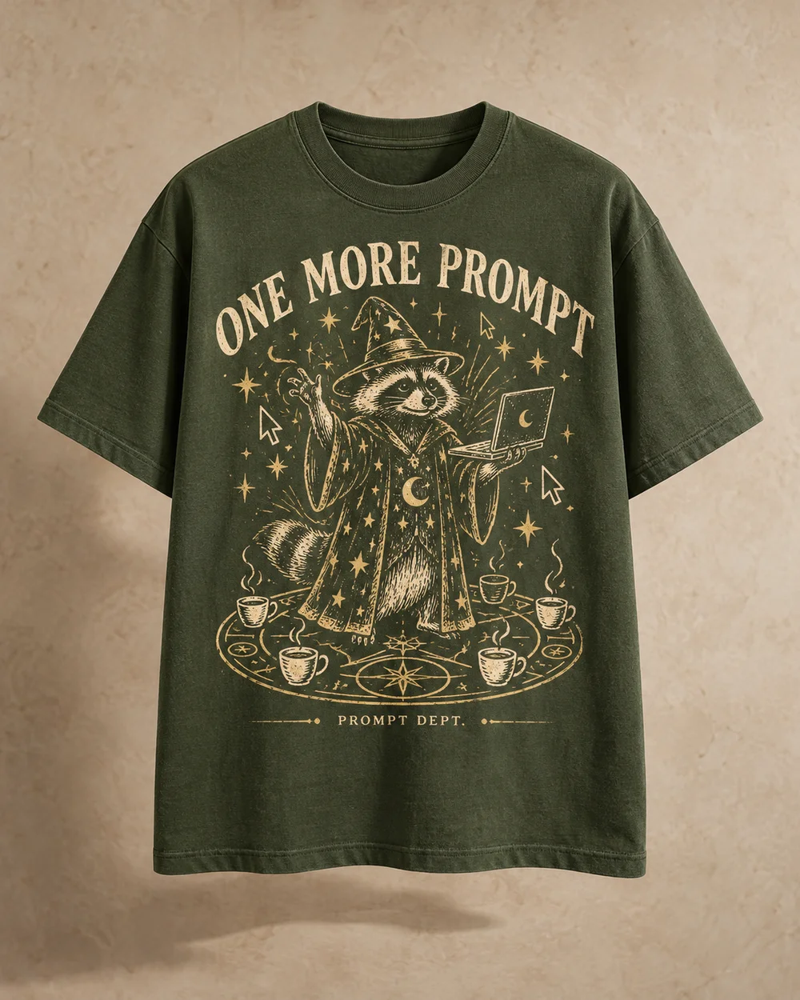
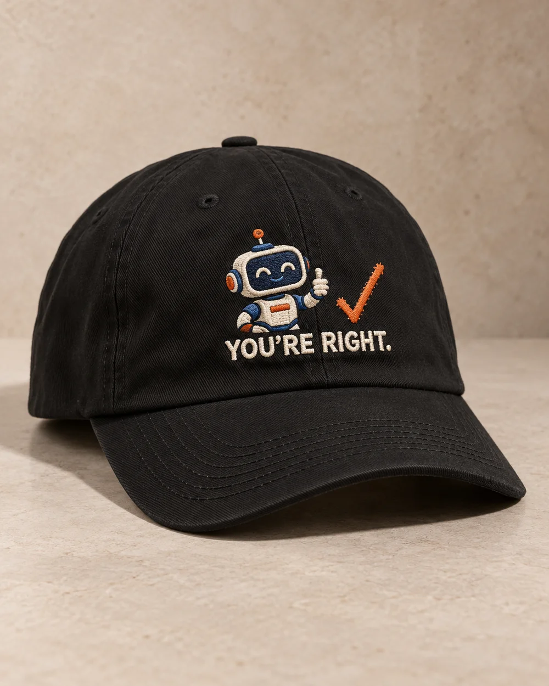

Meet your supervisor.
ONE MORE
PROMPT.
THEN COFFEE.
A cursor with a job to finish and absolutely no enthusiasm left. Coffee in hand. Boots on. Still here.
The new Prompt Dept. direction starts with a character you can recognize from across the room, paired with a compact, assertive wordmark.
Made of prompts. Worn by humans.
Meet the new collection ↗

A working clothing identity.
CHARACTER
COMES FIRST.
The cursor is the brand mascot. The cats, ghosts, raccoons and overconfident robots are its coworkers. Each piece gets its own visual joke.
AI-generated identity artwork. This is a raster concept master; vector cleanup, small-format simplification and physical print or embroidery proofs remain before production.